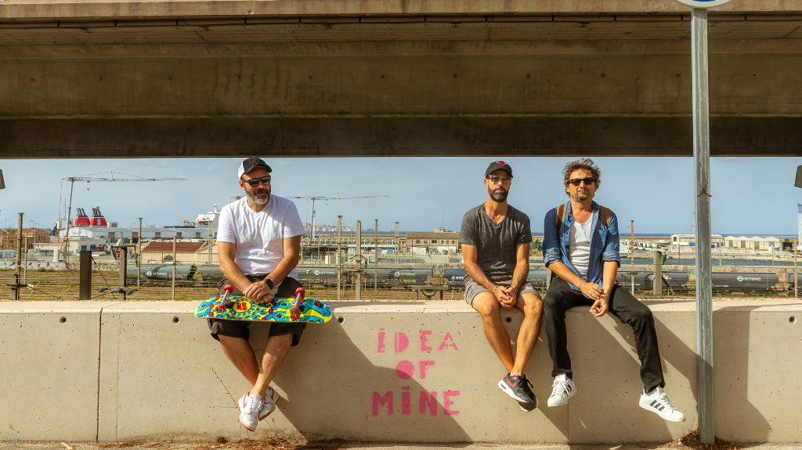

RedLight Resurfaces with 'Homeworks,' a DIY Rock Success

The following feature is now included in our online magazine which is also available in print.
Issue #4
Online Magazine | Print MagazineFor more details contact us at: volechomag@gmail.com
Almost two decades in and still struggling to find their own niche in an oversaturated music scene, Marseille rock band RedLight continue to prove their pertinence with their new album, Homeworks. Released March 14, 2025, the album is a testament to the band's DIY spirit as all ten tracks were composed, recorded, and produced in guitarist Dapé's home studio in Le Rove. The outcome is an album that contains raw energy combined with meticulous attention to detail, balancing retro nostalgia and new, forward-looking experimentation.
RedLight's sound genetic code is an intriguing blend. There are whispers of Pearl Jam's honest guitar-rock, The Beastie Boys' rhythmic experimentation, and The Cure's atmospheric soundscapes, all sounded over a base of dirty melodic sensibility. Homeworks takes its cue from that heritage but has no aspirations to stay there. The addition of Seb on drums adds a new, dynamic flavor to augment the seasoned rhythm section of Dapé, lead vocalist/guitarist Londres, and bassist Guy. The chemistry of the band is well-served here, each player contributing a distinct voice that fits beautifully into the overall sound.
Tracks such as forthcoming single Idea of Mine will be crowd-pleasers, their anthemic hooks and pounding beats, but it's the eclecticism of the album that most impresses. Some of the tracks descend into introspective, melodic vamps, others blow up with strobe-like hyperactivity redolent of the Strokes' earliest forms or the chant-along factor of the Pixies. RedLight's trick is in finding these poles—acoustic and scorching crescendos—and it's the secret to making Homeworks sound so wired and alive.
The DIY look of the album is not a mere exercise in image-making; it conditions the listener. There's the impression the band is in each moment of the production, making instinct-sounding decisions rather than ones that sound too polished. It's a way of thinking that brings to mind early Arctic Monkeys or even Beck, when personality and truth may come ahead of the gloss of the studio. Guitar-friendly alternative rock enthusiasts, from The Beatles' more experimental late-period output through the raw intensity of early 2000s garage rock, will find something to cling to here.
aside from the music, Homeworks is also a work of the new DIY production potential. With each step in the recording process handled in-house, RedLight show that rock music can still be successful away from big-label machinery, making music that is at once intimate and sweeping. On the record, you can feel the hours of refining texture, building up the melody, and grabbing at the moment of accident that gives the record its vitality.
RedLight have worked their way to respect by avoiding trends while being authentic. Homeworks does not tell listeners to be the same as the band—it opens its arms, providing something both old-school and spontaneous, intelligent and uncooked. It's testament that rock music is still capable of shocking, that DIY groups can still deliver fleshed-out albums without compromise, and that artistic freedom tends to leave the most engaging outcomes.
For enthusiasts in search of an ear trip that respects the past but engages with the promise of DIY recording, Homeworks is a joyous celebration. RedLight continue to demonstrate that Marseille can produce rock with heart, attitude, and a very distinctive twist.
Follow Our Playlist For More Music!
This dispatch was last updated on October 14, 2025